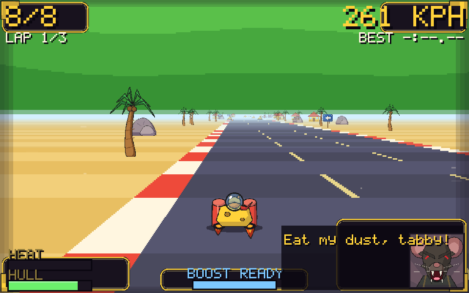

Eight cheese courses
Brie Beach Run, Cheddar Canyon, Swiss Hole Tunnels, Fondue Falls, Blue Cheese Bog, Parmesan Peaks, Camembert Caverns, and the Gouda Eve Classic, a five-lap finale.
A pod-racing parody with whiskers
Colby, an orange tabby with a racing scarf, hops into a cheese-powered pod and races Perring Parkway Pete, a gaunt red-eyed rat who fights dirty. Eight tracks, eight kinds of hazard, boost, barrel rolls, and a parts shop to make your pod less of a crumb.
One HTML file, no install. Keyboard controls on desktop; touch is untested. Audio has never been listened to (see below).

Brie Beach Run, Cheddar Canyon, Swiss Hole Tunnels, Fondue Falls, Blue Cheese Bog, Parmesan Peaks, Camembert Caverns, and the Gouda Eve Classic, a five-lap finale.
Pete shoves you when you ride alongside, drops mines behind him on straights, and boosts on the final lap. Expect cheesy taunts.
Engines, cooling, grip, armour and thrusters, each with five tiers. Spend what you win and see the stats move.
The simulation is deterministic: a seed gives the same race. Ghosts record your best run per track.
Honest status. Pawed Racer is a work in progress.
../character-library (local) or github.com/bsommers/character-library: characters in all styles, seeds Super Colby and Perring Parkway Pete.../pawfall-assets (local) or github.com/bsommers/pawfall-assets: Colby sprites, treasures, effects, sound effects and songs.How it was made covers the swarm of agents that built it.